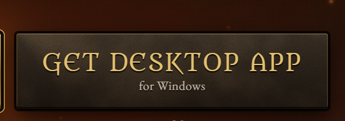

💻 電腦瀏覽器（Chrome / Edge）拖曳安裝
中 拖我到書籤列（D2 繁體中文）
- 按 Ctrl+Shift+B（Mac：⌘+Shift+B）叫出書籤列。
- 用滑鼠按住上面的金色按鈕，拖曳到書籤列上放開（直接點按鈕不會安裝）。
- 打開 遊戲頁面，點一下書籤列上的「D2 繁體中文」。
用的是作者出的電腦安裝版（D2 Survivors.exe）？書籤在安裝版裡不能用，請看下一段「電腦版遊戲」。
🖥️ 電腦版遊戲（D2 Survivors.exe）Windows 專用
這是電腦安裝版專用的檔案。只給從
d2survivors.lol 下載、安裝在 Windows 上的遊戲（D2 Survivors.exe）用。在瀏覽器或手機上玩，請用上面的書籤。
⚠ 安裝電腦版本身需要有暗黑破壞神主程式（Diablo II 或 Diablo II: Resurrected），否則無法執行！

作者網站上的這個按鈕下載的就是電腦版
⬇ 下載 D2倖存者中文化.zip
1
下載並解壓縮下載上面的 zip，在檔案上按右鍵 →「解壓縮全部」。一定要先解壓縮，不能直接在壓縮檔裡點兩下。
2
連按兩下「建立桌面捷徑.cmd」桌面會出現「D2 Survivors 中文版」圖示，之後都用它開遊戲。
3
用桌面圖示開遊戲，跳出確認時按「是」第一次開（以及每次遊戲自動更新後）會跳出一次「使用者帳戶控制」視窗，按「是」就會套用中文，接著遊戲就是中文。
建立桌面捷徑.cmd推薦：在桌面放「D2 Survivors 中文版」，用它開遊戲就是中文，遊戲更新後也會自動重新套用。
安裝中文版.cmd另一種方式：先關掉遊戲再執行，馬上套用中文，之後用原本的捷徑開也是中文（也會放桌面圖示）。
移除中文版.cmd不想要了：遊戲恢復原本的英文版，桌面圖示也會刪掉。
使用說明.txt離線版的完整說明。
跟書籤版功能一樣：遊戲「選項」選單裡有 語言（English／繁體中文）切換和 書籤修改 按鈕。
更新：每次開遊戲會在背景自動從 GitHub 下載最新版中文化。也可以手動更新：「選項 → 書籤修改」最下面的 中文化更新 按「檢查更新」，下載到新版後按「重新載入」就套用（遊戲中請先儲存並離開，在主選單再按）。
出現藍色的「Windows 已保護您的電腦」：按「其他資訊」→「仍要執行」。或在下載的 zip 上按右鍵 →「內容」→ 勾選「解除封鎖」→ 確定，再解壓縮。
📱 手機（iPhone / Android）貼上安裝
書籤程式碼（第 1 步要複製的）
建議把書籤名稱取成 D2 繁體中文，Android 之後在網址列打「D2」就找得到。
🎮 使用方式
1
打開
d2survivors.lol，點書籤「D2 繁體中文」。
手機 Android：在網址列輸入「D2」，點下方出現的書籤（從書籤清單點不會執行）。
2
遊戲文字馬上變成繁體中文。遊戲的「選項」選單裡（「返回上一個選單」旁邊）會出現 語言：English／繁體中文 切換鈕，選擇會記住；下面還有 書籤修改 按鈕。
3
再點一次書籤也可以中英切換。重新整理頁面後要再點一次書籤。
選單與介面主選單、英雄選擇、職業介紹、物品欄、恰西的商店、儲物箱、暫停與結算畫面。
技能與升級七個職業全部技能名稱、升級卡片的技能說明、進化條件、技能樹分頁。會造成傷害的技能名稱後面標（物理）或（魔法）。
裝備與屬性全部底材、暗金裝備、魔法詞綴（例如「狐狸之短劍」），以及「+15 力量」這類屬性文字。
怪物與地區怪物、超級獨特怪、首領、各幕地區與地城樓層、神殿名稱與效果。
書籤修改選項選單裡的「書籤修改」：遊戲中可直接改力量／敏捷／體力／精力、生命、移動速度、傷害倍率等（只對這一局有效）；在主選單可改金幣與恰西的永久升級。
（物理）（魔法）怎麼看：（物理）技能吃力量（每點 +物理傷害）；（魔法）技能包含火焰、冰寒、閃電、毒素、魔法，吃精力（每點 +元素與魔法傷害）。升級時選屬性、挑裝備就照這個方向。
譯名以台灣玩家熟悉的版本為主，參考經典攻略站「易牙居」的中英對照。
書籤是從網路載入翻譯程式，第一次使用需要連上網路。
🕹️ 遊戲手把Xbox／PS／Switch Pro
遊戲已經內建手把操作，接上手把（USB 或藍牙）後隨便按一個鍵就能玩。書籤只負責偵測連線和中文提示，不會改動手把按鍵。
按鍵與震動設定
在遊戲的「選項 → 手把」調整：
腰帶 1～4、互動、技能列表等按鍵配置
搖桿死區
震動開／關
腰帶按鍵標示
偵測到手把時，畫面下方腰帶 1～4 格的左上角會標出喝藥水的按鍵（預設是十字鍵 ←↑→↓）。
在遊戲裡把藥水改綁到 LT／RT 等按鍵，標示也會跟著變。
遊戲的「選項」選單裡（「書籤修改」上方）有 🎮 手把 按鈕可以檢查連線：綠點＝已連接，紅點＝未連接。點開會顯示手把名稱；沒連上時會提示重新連接，接好並按一下手把上的鍵就會自動變成「已連接」。遊戲中手把斷線也會自動跳出提醒。
手機也可以：Android（Chrome）和 iPhone／iPad（Safari，iOS 14.5 以上）都支援用藍牙連線的 Xbox、PS4／PS5、Switch Pro 等手把。先在手機的「設定 → 藍牙」配對手把，再打開遊戲點書籤、按一下手把上的鍵即可。
🖼️ 成品展示
示意圖：中文化後的升級畫面與遊戲狀態列。
升級
1🔥
火彈（魔法）
等級 1 → 2
向最近的怪物發射 1 道彈矢，25 傷害
進化 為 火球（魔法）：上限 2/8，從等級 12 起
2👢
高速跑步／行走
新被動技能 1/6
+10% 移動速度
3❄
冰封裝甲（魔法）
新技能 1/6
進化 冰封裝甲 為 碎冰甲，還 需要：上限 0/8
重抽 (R) · 2略過 (X) · 2放逐 (B) · 2
生命：80 / 80第一幕 · 鮮血荒地 · 等級 3 · 25 擊殺經驗值：3 / 5
❓ 常見問題
點了書籤沒有反應？
確認是在 d2survivors.lol 的遊戲頁面上點，在其他網頁點會跳出提示。Android Chrome 要從網址列輸入書籤名稱再點建議項目，從書籤清單點不會執行。iPhone 請確認網址欄位是整段 javascript: 開頭的程式碼，前面沒有多出空白或 https://。
手把沒有反應？
按一下手把上的任何鍵（瀏覽器要等你按鍵才會讓網頁讀到手把），遊戲分頁要在前景。手機請先在「設定 → 藍牙」配對好手把；iPhone 需要 iOS 14.5 以上。手把震動或按鍵不順手，請到遊戲的「選項 → 手把」調整。
書籤需要自己更新嗎？
不用。書籤每次點都會載入最新版本的翻譯，裝一次就好。
為什麼有些字還是英文？
書籤按下去之前就已經畫在畫面上的少數文字（例如角色頭上的字），要等它重新出現才會變中文。升級卡片上「進化…」那一行遊戲是一個字一個字分開畫的，所以語順會照英文排，例如「進化 火焰之路 為 火牆」。
想看原本的英文？
打開遊戲的「選項」選單，在「語言」那排按「English」，或再點一次書籤。中英可以隨時切換，選擇會記住。
中文字的字型？
遊戲原本的點陣字型只有英文，中文改用電腦內建的字型（Windows 是微軟正黑體）顯示，並加上黑色描邊、調亮顏色，在任何背景上都看得清楚；英文和數字維持遊戲原本的字型。
書籤修改怎麼用？
打開遊戲的「選項」選單，按右邊的「書籤修改」。遊戲中（Esc 暫停 → 選項）可以加減力量／敏捷／體力／精力（效果跟升級時選屬性一樣），或直接改生命、移動速度、傷害倍率、技能冷卻、受到傷害等數值，按「套用」立即生效；這些只對這一局有效，「儲存並離開」後再繼續會回到原本的數值。進遊戲後要先打到第一隻怪物才抓得到人物資料。主選單的選項裡則可以改金幣和恰西賣的永久升級，按「儲存並重新載入」後生效，之後要再點一次書籤。
電腦版遊戲更新後又變英文？
遊戲自動更新會換掉被修改的檔案，所以中文會不見。用桌面的「D2 Survivors 中文版」圖示開遊戲，會自動重新套用（跳出一次確認，按「是」）。用遊戲原本的捷徑開則會維持英文，直到下次用中文版圖示開。
電腦版遊戲的中文化做了什麼？
在遊戲資料夾 resources\app.asar 裡的啟動程式加一行，讓遊戲開啟時載入 %APPDATA%\D2SurvivorsZH 裡的翻譯程式（跟書籤同一份）。所以需要一次系統管理員權限。不會改存檔、不會上傳資料；執行「移除中文版.cmd」就會完全還原。遊戲裝在別的地方或還是英文，請附上 %APPDATA%\D2SurvivorsZH\last-run.log 回報。
會不會動到存檔、上傳我的資料？
只有你在「書籤修改」按下「儲存並重新載入」時才會改存檔（金幣與永久升級），其他時候書籤只改畫面上的文字。不會上傳任何資料；中英切換的選擇記在你自己的瀏覽器裡。